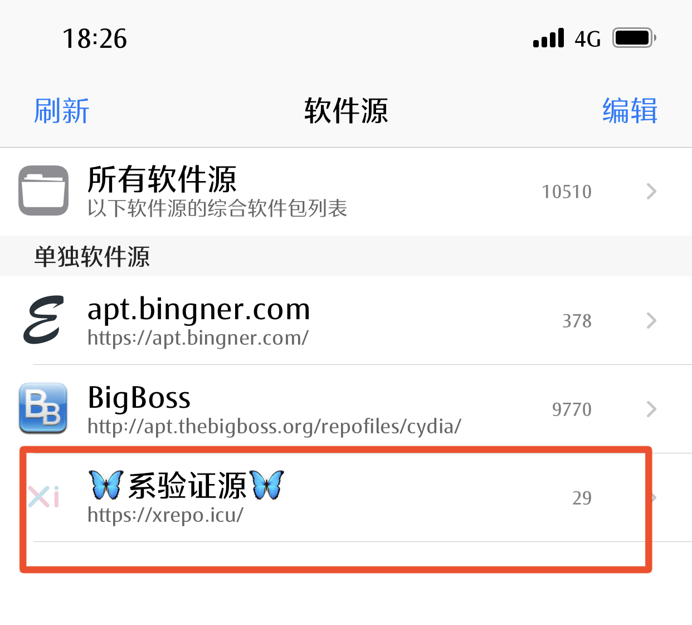
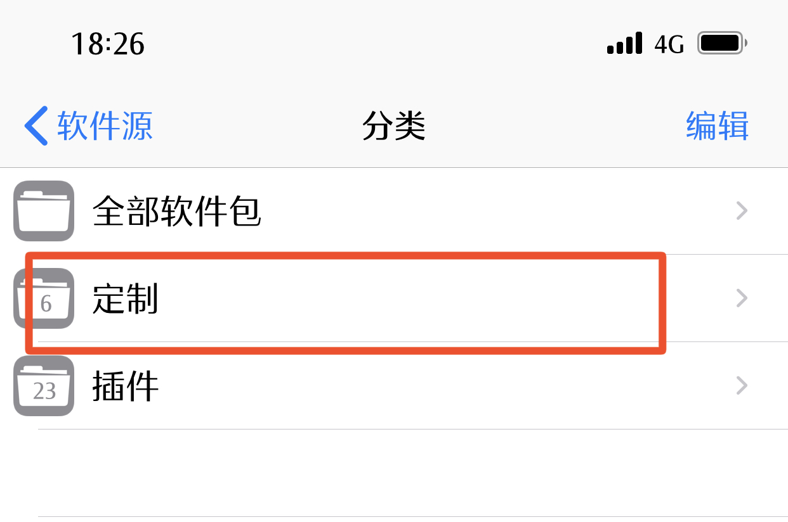

提示：安装前请提前购买本插件
1.手机访问xios.host点击按钮“添加软件源”。
2.在提示框中点击“打开”。
3.点击按钮“Install the Source”。
4.在Cydia/Sileo中 进入软件源并点击“系验证源”。

5.点击选项“定制”。

6.安装红框圈起来的插件“如图所示”。
7.安装完成后进入桌面，会出现提示安装的系验证弹窗，点击开始安装。
8.等待一会后，会出现安装完成的提示，如图所示。
9.如果安装完成，进入手机设置后右上角出现绿色盾牌即安装完成(如图所示)，即刻就可以安装掉签软件了。
注意事项，如果提示网络错误-1，使用数据网络重试。